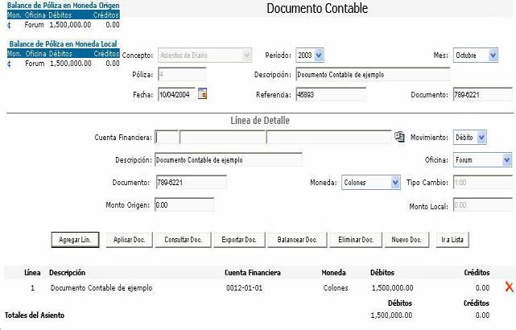

Registro de documentos contables
Al incluir los asientos de diario, se debe de definir para el encabezado del asiento: el concepto del asiento de diario, período y mes en que se aplica el asiento, la Fecha de registro, la descripción del documento, una referencia si se requiere (opcional) y la numeración o referencia del documento físico como se muestra en la figura 1 . El número de póliza contable es generado automáticamente por el sistema, es un consecutivo y no es modificable para efectos de auditoría de sistemas.
Figura 1.Encabezado del Documento contable.
Para definir el detalle del documento, es necesario indicar la Cuenta contable que se desea afectar, el tipo de movimiento (débito o crédito), la Oficina, una descripción que identifique el movimiento, Moneda, Tipo de cambio si la moneda es extranjera, y el Monto en Moneda Origen y Moneda Local (calculado automáticamente).

Figura 2. Detalle del Documento contable
Es importante que cuando se crea un asiento contable queden balanceados tanto los créditos como los débitos, ya que si no está balanceado el asiento no podrá ser aplicado. El asiento debe de estar balanceado tanto en montos en moneda local como en moneda extranjera.